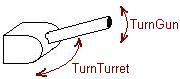

|
На рисунке src_entity - бот, движущийся вверх, dest_entity - некий объект. Функция DeltaYaw возвращает угол "фи". |
| Move | ||
переменная, с помощью которой задается скорость движения бота.
|
| TurnCorpus | ||
переменная, с помощью которой задается направление поворота бота :
|
| TurnTurret | ||
| переменная, с помощью которой задается направление поворота пушки : 
|
| TurnGun | ||
переменная, с помощью которой задается направление поднятия/опускания ствола пушки :
|
| Fire1 | ||
переменная запуска снаряда :
|
| Fire2 | ||
переменная запуска самонаводящейся ракеты :
|
|
Move = 1 ; двигаемся вперед с максимальной скоростью TurnCorpus = 1 ; поворачиваемся налево на максимальный угол |
|
Move = 1 TurnCorpus = 1 angle = angle + 20 ; эта переменная указывает угол сканирования ScanRadar ( angle ) ; сканируем пространство под углом angle |
|
Move = 1 TurnCorpus = 1 angle = angle + 20 ScanRadar ( angle ) If (Enemy <> 0) And (target% = 0) ; если враг существует, и переменная target пуста target = Enemy ; "запоминаем" врага, теперь переменная target не пуста EndIf |
|
Move = 1 TurnCorpus = 1 angle = angle + 20 ScanRadar ( angle ) If (Enemy <> 0) And (target% = 0) target = Enemy EndIf If target <> 0 ; если враг существует TurnTurret = DeltaYaw ( Turret, target ) ; поворачиваем пушку на врага TurnGun = DeltaPitch ( Gun, target ) ; поворачиваем ствол на врага Fire1 = 1 ; пли! End If |
| DeltaYaw ( src_entity%, dest_entity% ) | ||
угол, на который надо повернуть объект src_entity по оси OY, чтобы направить его на dest_entity.
|
| DeltaPitch ( src_entity%, dest_entity% ) | ||
угол, на который надо повернуть объект src_entity по оси OX, чтобы направить его на dest_entity.
|
|
Move = 1 TurnCorpus = 1 angle = angle + 20 ScanRadar ( angle ) If (Enemy <> 0) And (target% = 0) target = Enemy EndIf If target <> 0 ; если враг существует TurnTurret = DeltaYaw ( Turret, target ) TurnGun = DeltaPitch ( Gun, target ) If Abs ( DeltaYaw(Turret, target) ) < 6 ; если ствол "почти" направлен на врага Fire1 = 1 ; пли! EndIf End If |